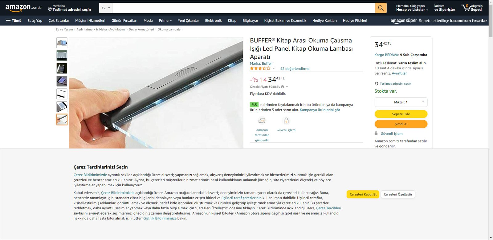

Kitap Okuma Lambası
Merhaba meraklı arkadaşlar,
İnternette görüp, bunu ben de denemeliyim dediğim bir projemden bahsetmek istiyorum.
Aslında fiyat olarak oldukça uyguna satılıyor. Aşağıdaki Amazon sayfası 7-2-2022 tarihli. Benim bu projeyi yapma tarihim 2020 nin ikinci ayı. Ve o zamanlar bu ürünün (ya da çok benzerlerinin) fiyatı yanlış hatırlamıyorsam 100 TL nin üzerindeydi 🙂

Ama kendi yaptığını kullanmanın keyfi de bir başka.
Öncelikle malzeme araştırmasına giriştim. En önemli parçalardan biri olan plexi levhayı bulamadım. Aslında düz olarak var ama orijinalinde kalından başlayıp sonlara doğru incelmeye başlayan plexi bulmam mümkün olmadı. Elimde var olan pvc_silikon karışımı olduğunu düşündüğüm bir malzeme vardı. Bununla denesem olur mu acaba deyip. İşe giriştim…
Led için devresi hazır bir ürün bulup onun parçalarını kullansam iyi olur. İnternette biraz araştırıp bunu buldum.

Hem açma kapama hem de ışığın gücünü kontrol edebileceğimiz harika bir ürün.
Şimdi bütün malzemeler elimde olduğuna göre 3dsmax te tasarım işlerine girişmem gerekiyor. Hem ne yapmam gerektiğini görüyorum hem de 3D printer da basılacak modeli hazırlamış oluyorum.


Sonuç, işlevsel olarak çok tatmin edici olmasa da bu yolda edindiğim bilgi, tecrübe ve deneyim harika.
Çizim ve 3D modelleri yasa dışı herhangi bir işte kullanmamak koşulu ile Dosyalara bu linkten erişebilirsiniz.
iyi eğlenceler arkadaşlar…
Devam edecek …
İlk yayın: https://pointpointblog.wordpress.com/2022/02/07/kitap-okuma-lambasi/